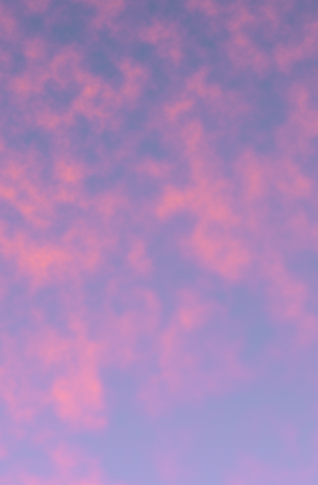

Principles, written in code, create these clouds. No brush, no hand placing shapes. Not knowing exactly how the image will turn out is what makes it interesting to work with.
Each image is a grid of 13,056,000 points. Every point knows two things about itself: how far across it sits, and how far down. x and y. The task is to turn those two numbers into a color, thirteen million times over, until something that could be a cloud in the sky shows up.
So I didn't start with code. I started with a question: what makes a cloud a cloud? For one thing, it's never the same twice. The randomness is part of what it is. It's soft. It doesn't have edges, it just thins out into air. It has detail at every scale at once, big masses, smaller billows, then wisps, and it's patchy, dense and torn in one place, thin and quiet in the next, lit on one side and shadowed on the other.
Knowing these traits, the task was to describe them with a few mathematical rules, so that each of those thirteen million points could work out, on its own, what color it should be. Is there cloud where I am, and if I'm near an edge, how gently does it fade? How dense am I, brighter like daylight, or darker like a storm? How high up, near the warm horizon or the cooler top? Every trait becomes a small calculation, and each point runs through all of them until one color comes out. I just described what a cloud is, as math, and let the image put itself together.
A technical view from a single points perspective
Take one point at position (x, y). On its own it's just two coordinates — to get a color, they're sampled through several noise fields. Each field is simplex noise, a gradient-noise function that maps a 2D coordinate to a continuous value in roughly [-1, 1], smooth between neighboring inputs. Each field runs as fractal Brownian motion: the noise is summed over several octaves, each octave at double the frequency and roughly half the amplitude of the last, so one field carries both coarse structure and fine detail. The result is normalized to [0, 1].
smoothstep between two thresholds — the eased remap turns it into a mask in [0, 1], with a soft falloff instead of a hard edge. A second field at higher frequency supplies the texture, but sampled at domain-warped coordinates: before reading it, (x, y) is offset by two further noise fields acting as a displacement vector, which bends the sampling grid and produces the swirling. A third field at very low frequency modulates how much of that texture contributes locally.
These combine by multiplication into a single scalar — density ∈ [0, 1]. That density then drives the color: lightness, chroma and hue are each interpolated between a sky value and a cloud value, in OKLCH (a perceptually uniform space, so linear steps in the parameters read as linear steps visually), with hue taking the shorter arc around the wheel. The function returns one color. The same evaluation runs independently per point, ~13 million times.